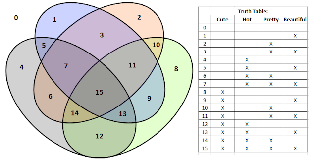

Motto: This Column is Handsome, but Not Hot
Human beings are beautiful - this is something the Greeks knew and appreciated long before any of us were ever around. Unfortunately I feel like it has become almost a taboo subject. Like, to talk about human beauty is to make the listener feel uncomfortable or self-conscious about their perceived imperfections.
But you are perfect. You may not be perfect in exactly the way you think you should be thanks to movies, magazines, and models; but you are perfect. You are the human, and the human body is a beautiful and amazing thing.
Now, to completely counteract everything I just said, I’m going to talk about my theory on the four facets of human attractiveness.
This will be a bit long, but hopefully entertaining enough to justify it. Just as a FYI right now, I have sources and a disclaimer at the bottom of the post (above the Top 5).
To say someone is “attractive” is a very general statement. How would you describe their attractiveness? Without going into the specific details of how dainty her neck is or how square his jaw is, I think we all naturally tend to ascribe one or more of the same universal sub-categories of attractiveness. I’ve toyed around with this notion in the past and have come up with the following guide.
The Taxonomy of Human Attractiveness:
“Cute”
“Cuteness” is hard to put into words, but you know it when you see it. “Cute” is the most innocent and non-threatening term and can therefore be dropped casually in polite conversations. It carries a fair amount of weight and meaning.
Being “cute” may be associated with one or two exaggerated features (such as big eyes or a little nose). This is important because “cuteness” is one of the terms for beauty that is most often applied to individual features - “she has cute dimples”, etc. Cuteness could also be associated with innocence or general un-spoiledness (I tried to think of a better word, I really did). It is possible to be cute without any of those things though - because cuteness is not universal. Although there are some traits that are (almost) universally accepted as “cute” (just think of anything Disney and you got it), cuteness is pretty subjective. Great example - some people find messy hair cute & endearing. Some don’t.
Cuteness has a way of hooking you in and drawing you closer on a much more personal level than the other categories. It’s the most closely tied to behavior. It’s the hardest to separate from personality. It strikes a different cord. And for those reasons, it is the hardest to define.
Examples of cuteness: Joseph Gordon-Levitt and Zooey Deschanel
You just want to pinch their cheeks Example Runner-Ups: John Krasinski and Jenna Fischer
”Pretty”/“Handsome”
“Pretty” is to female as “Handsome” is to male. For simplicity, I will refer to both of these terms as just “pretty” from now on. “Pretty” is the best word for the most generic level of attractiveness there is. Being called pretty is definitely a good thing, but not necessarily the best thing.
“Prettiness” is probably the easiest term to define. Being pretty implies a basic level of symmetry and proportionality. It’s generally hard to point to any one flaw in the features of a pretty person.
Another interesting note - it turns out that your “average” looking man or woman is actually quite handsome/pretty. Performing the arithmetic mean on the features of a population removes any abnormalities or exaggerations, leaving behind a surprisingly attractive person. So, if someone says you are “average” looking, make sure to ask “mean, median, or mode?”
Examples of handsome and pretty: Ryan Reynolds and Jennifer Garner
“They would be more attractive if… uh… I dunno” Example Runner-Ups: Sandra Bullock and Heath Ledger
”Hot”
“Hot” is the least innocent (and most aggressive) term on the list. Hot is the category most influenced by physique and body composition. Hotness is more visceral and less aesthetic.
Although “hot” is different things to different people, it really originates in our animal instinct for survival and desire to give our potential offspring the best competitive traits. My Biology professor often asked “what is the selective advantage?” of any given trait. Broad shoulders and an athletic build in men make them more capable of providing food for and protecting their young, historically. Wide-set hips and a narrow waist in women may suggest fertility.
Examples of hotness: Channing Tatum and Megan Fox
Gratuitous skin shown at no extra charge Example Runner-Ups: Scarlett Johansson and Adam Levine
”Classically Beautiful”
I think “beautiful” is the top-tier level of attractiveness. Take “pretty” and “handsome” and ramp them up a few notches. “Beautiful” requires that all of the pieces work together to make a whole that is greater than the sum of its parts. The term is technically gender neutral, but it usually only used for women. For men the term could be “Exceedingly handsome” or something similar, but it really boils down to good old-fashioned beauty.
Beautiful people are the kind that you could just stare at for hours - and the longer you stared, the more you would come to appreciate just how well everything comes together. I think “beautiful” carries the most weight of any term for attractiveness. What it suggests is nothing short of a biological art - as though God himself meticulously crafted a stunning frame and adorned it with individual features that perfectly compliment not only each other, but the greater whole.
Examples of classic beauty: George Clooney and Olivia Wilde
It’s hard to notice this caption thanks Example Runner-Ups: James Franco and Natalie Portman
Then, there are those rare people that nail every single category perfectly:
“Don’t act like you’re not impressed” Thus ends my guide.
Side note on Cuteness: Cuteness seems to make for the most lasting and endearing on-screen couples. My two cuteness runner-ups were suggested independently by 3rd party individuals. These individuals did not know of each other or what the other had suggested. So, getting both actors that play the famous “Jim and Pam” couple from “The Office” was somewhat surprising.
The Office is/was one of my favorite shows of all time After I realized those two suggestions were so closely related, I wanted to bump Joseph Gordon-Levitt and Zooey Deschanel in favor of Jim and Pam… until I realized JGL and Zooey are just as related:
This is a still from 500 Days of Summer - one of my favorite movies of all time Side note on the relationship between the terms: I wanted to make a Venn diagram to show all possible combinations of attractiveness clearly; but it turns out that making a true Venn diagram with four categories gives you something really confusing-looking. Check this out -

I pulled blank diagram off Wikipedia and added some numbers to make it clearer. Didn’t help much. The Venn diagram thing is obvious when you think about it. If you add a 4th circle to the traditional “3 overlapping circles” Venn we all think of, you can’t have attributes from opposite circles without also having one of the other two. You need 2^X distinct zones to represent X number of attributes in a Venn and 4 overlapping circles is two zones shy of that number. That’s low-level counting theory - the only level I ever really understood. I pity the Bool (that’s a logic pun right there).
{kind=link}
The various types of attractiveness are inherently related. It’s obvious and common how someone can be “cute” and “handsome” or “beautiful” and “hot”, but it’s more interesting to look at what’s not common using my system. You don’t see many people who meet all the criteria other than “pretty/handsome”. The number on the Venn diagram for that would be 13. I can’t think of a single example of a 13.
One last interesting tidbit, how the words for attractive are related in other ways. You can call an animal “cute”, “pretty”, or “beautiful”, but you absolutely cannot call one “hot”. Animal descriptors are limited to options 0-3, or 8-11. Similarly, you can describe an action as being “cute”, “hot”, or “beautiful”, but not really “pretty”. 0, 1, 4, 5, 8, 9, 12, or 13.
Sources for this column:
- Crowdsourcing using anywhere from 1 to 12 people (I used 5 people other than myself, I don’t know why I wanted that to be nebulous) I gathered the example celebrities. I learned something from crowdsourcing - nobody agrees on anything ever (except Joseph Gordon-Levitt being cute). I guess beauty is in the eye of the beholder.
- Biology class. Hard to cite, but true.
- 24.88 years of observation… and about 10 years of careful observation.
- This Wikipedia article on Physical Attractiveness
Disclaimer:
I am biased. My collaborators are biased. We are all white midwesterners in our earlyish 20’s.
I just now realized that positively zero of the attractive people that made it onto this list are blonde. Like I said, I’m biased.
Top 5: Terms that Almost Made it into My Guide
- “Sexy” was deemed to similar to “Hot”.
- “Gorgeous” was deemed to similar to “Beautiful”.
- “Attractive” was removed because you aren’t supposed to use the word you are defining in its definition.
- “Exotic” was suggested, and very very good.
- “Technically Pretty” was my favorite - used to describe people that have all the necessary attributes to be attractive, but still just didn’t pull it off for some reason. I removed this as was explicitly meant to be used for when someone wasn’t actually attractive - so it shouldn’t be on the attractiveness guide.
Quote:
“I would add a 5th category - ‘Technically hot’.” Josh told me this after I wrote #1 in my Top 5, we think alike